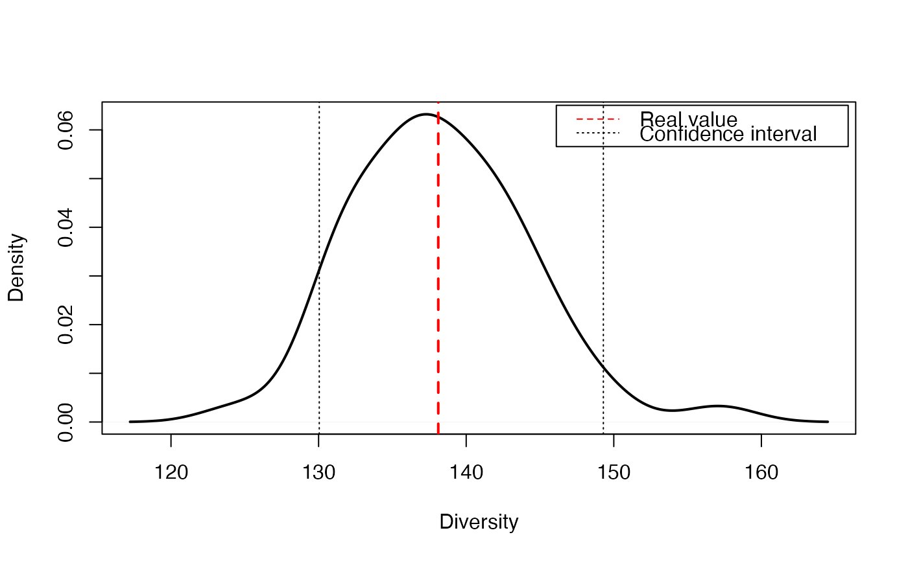

EntropyCI.RdResamples a community by Monte-Carlo simulations of a multinomial distribution and returns a vector of entropy values to calculate confidence intervals.
EntropyCI(FUN, Simulations = 100, Ns, BootstrapMethod = "Chao2015",
ShowProgressBar = TRUE, ..., CheckArguments = TRUE)The entropy function to be applied to each simulated community. May be any entropy function accepting a vector of species abundances, such as bcTsallis, bcShannon, bcSimpson or bcPhyloEntropy.
The number of simulations to build confidence intervals.
A numeric vector containing species abundances.
The method used to obtain the probabilities to generate bootstrapped communities from observed abundances. See rCommunity.
Additional arguments to be passed to FUN.
If TRUE (default), a progress bar is shown.
Logical; if TRUE, the function arguments are verified. Should be set to FALSE to save time when the arguments have been checked elsewhere.
This function is used to obtain the distribution of entropy and eventually calculate confidence intervals. It draws simulated communities according to a multinomial distribution with the same number of individuals and probabilities as the actual community. It calculates the entropy of each simulated community. Last, it recenters the distribution of entropy values arounf the actual value of entropy according to Marcon et al. (2012): the estimation bias of simulated communities entropy can not be corrected analytically, but it does not affect the distribution shape.
Diversity can not be recentered this way so diversity function should not be used. Unexpected results will be obtained if inappropriate functions are used.
A numeric vector containing the entropy value of each simulated community.
Marcon, E., Herault, B., Baraloto, C. and Lang, G. (2012). The Decomposition of Shannon's Entropy and a Confidence Interval for Beta Diversity. Oikos 121(4): 516-522.
# Load Paracou data (number of trees per species in two 1-ha plot of a tropical forest)
data(Paracou618)
# Abundance (all estimators will include bias corrrection)
Ns <- as.AbdVector(Paracou618.MC$Ns)
q <- 1
# Estimate entropy and transform it into diversity
RealEst <- expq(Tsallis(Ns, q), q)
# Transform the distribution of Tsallis entropy into diversity
SimulatedDiversity <- expq(EntropyCI(Tsallis, Simulations=50, Ns, q=q), q)
#>
# Figure
plot(density(SimulatedDiversity), col="black", lwd=2, main="", xlab ="Diversity")
abline(v=RealEst, col="red", lwd=2, lty=2)
abline(v=quantile(SimulatedDiversity, probs = 0.025), col="black", lwd=1, lty=3)
abline(v=quantile(SimulatedDiversity, probs = 0.975), col="black", lwd=1, lty=3)
legend("topright", c("Real value", "Confidence interval"), lty=c(2,3),
col=c("red", "black"), inset=0.01)

# Print results
cat("Estimated Diversity:", RealEst)
#> Estimated Diversity: 138.1078
quantile(SimulatedDiversity, probs = c(0.025, 0.975))
#> 2.5% 97.5%
#> 124.7514 152.1187